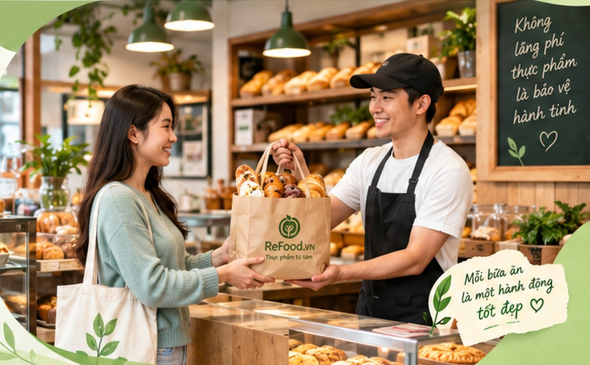

Xem túi mù từ các cửa hàng gần bạn với giá bán, giá trị ban đầu và giờ nhận rõ ràng.
Giữ túi chỉ với một lần bấm. Số túi còn lại được cập nhật ngay.
Đến đúng địa chỉ trong khung giờ nhận và mở túi để khám phá bất ngờ.
Thông tin cửa hàng được đồng bộ với trang Túi mù từ cửa hàng.